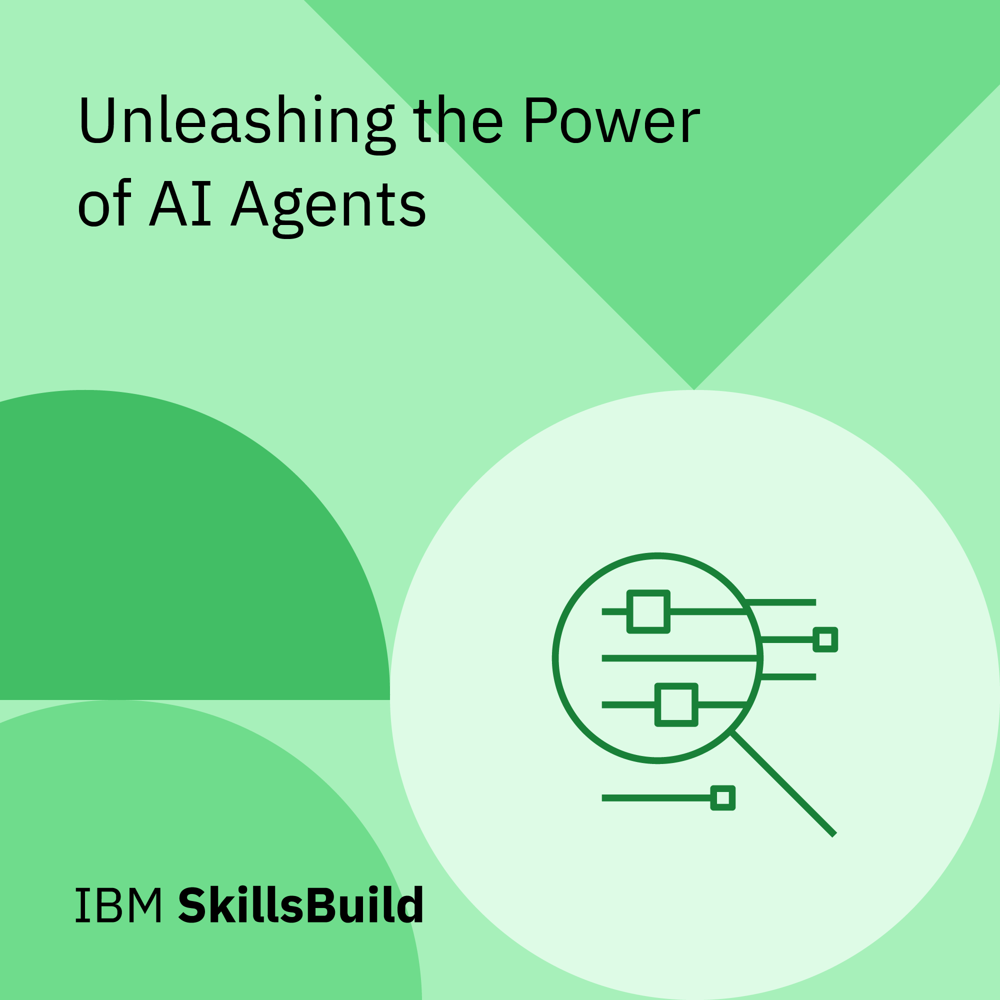
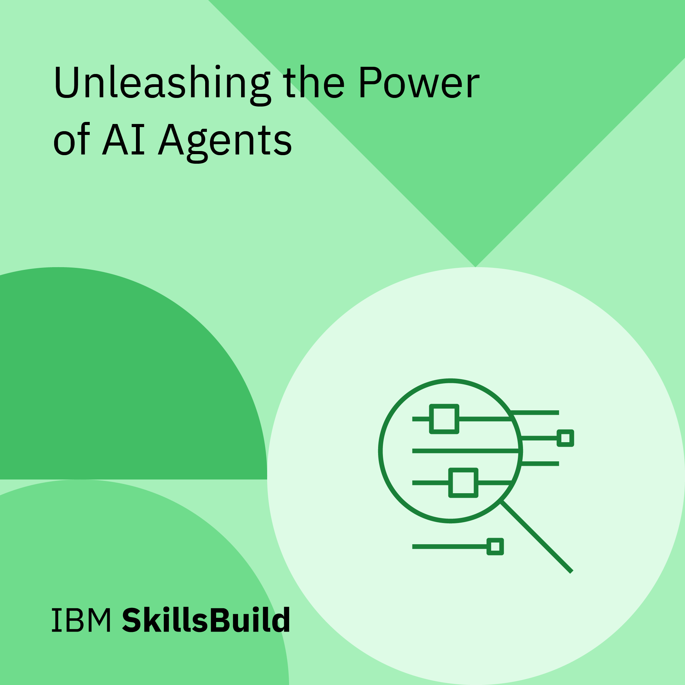

Hello I'm
Astha Dakhinray
I'm a Front-End Developer and AIML enthusiast passionate about creating responsive, user-friendly web interfaces using HTML, CSS, JavaScript, React, and Tailwind CSS. I also develop ML models for real-world applications, with experience in tools like TensorFlow and OpenCV. As an emerging App Developer, I enjoy building mobile experiences and exploring Generative AI to push the boundaries of innovation. With a strong eye for detail, design, and performance, I thrive on transforming ideas into impactful digital solutions.

About Me
FrontEnd Developer, ML Model Developer & App Developer
I'm a Front-End Developer with hands-on experience in building responsive and user-friendly web and mobile applications. I’ve also developed Machine Learning models that address real-world challenges, combining my interest in AI/ML with practical implementation.
Currently, I’m pursuing a B.Tech in Computer Science and Engineering with a specialization in AI & ML from Odisha University of Technology and Research (OUTR). As part of my learning journey, I completed a one-month internship at Central Tool Room and Training Centre (CTTC), where I gained real-world exposure to Artificial Intelligence and Machine Learning applications.
I'm also actively involved in innovation programs — I was selected for the Generative AI Student Exchange Program, participated in the Adobe India Hackathon, and contributed to a national-level project in the Smart India Hackathon (SIH). These experiences have enhanced my problem-solving skills and deepened my knowledge of Generative AI, UI/UX, and product development.
Check out my portfolio to explore my projects, skills, and certifications!
Resume
Experience
Skills
Education
15 June 2025 - 15 July 2025
AIML Intern
CTTC-Bhubaneswar
During my 1-month internship at CTTC, I gained practical exposure to AI/ML concepts, enhancing my understanding of model building, data preprocessing, and real-world applications. As part of this, I developed a Face Recognition Attendance System using OpenCV, TensorFlow, and Keras, which automates attendance by detecting and recognizing faces in real-time, ensuring accuracy and efficiency. This project strengthened my skills in computer vision and deep learning while applying them to a practical solution.
1 May 2025-28 Aug 2025
Generative AI Exchange Program-2025
Successfully participated in the Google Gen AI Program, where I explored the latest advancements in generative AI, including large language models, prompt engineering, and agentic AI. Gained practical experience through hands-on projects using Google's Gen AI tools, focusing on building innovative and responsible AI-driven solutions for real-world use cases.
7 July 2025-6 Aug 2025
App Development
Skills++'25-ZAIRZA
Gained hands-on experience in designing and developing mobile applications using modern frameworks and tools. Learned the complete app development lifecycle—from wireframing and UI/UX design to coding, debugging, and deployment. Built user-friendly, responsive apps with a focus on functionality, performance, and real-world usability.
7 July 2025-6 Aug 2025
GEN AI
Skills++'25-ZAIRZA
As part of Skills++ 25, I experienced the power of Generative AI hands-on—explored Prompt Engineering, understood Transformers, worked with LangChain, used Vector Databases, and built impactful projects. Over the 4 weeks, I also discovered how GenAI goes far beyond chatbots and image generators, unlocking real-world innovation and creativity.
June 2025
Data Set Cleaning
CTTC-Bhubaneswar
During my time at CTTC, I worked on a Data Set Cleaning Project where I focused on identifying and handling missing, duplicate, and inconsistent data. This involved using Python libraries like Pandas and NumPy to preprocess raw datasets, ensuring they were accurate, structured, and ready for machine learning models. The project helped strengthen my data wrangling and preprocessing skills.
July 2025
Building ANN & CNN Models
CTTC-Bhubaneswar
At CTTC, I built both Artificial Neural Network (ANN) and Convolutional Neural Network (CNN) models to solve real-world problems using deep learning. The ANN was designed for structured data tasks, while the CNN focused on image classification and feature extraction. This project enhanced my understanding of neural architectures, model training, and performance optimization using Python and TensorFlow/Keras.
Java
Python
HTML5
CSS3
JavaScript
C++
React.js
Tailwind.css
Bootstrap
Flutter
Figma
MongoDB
Node.js
SQL
Git & GitHub
2023-2027
B.Tech CSE-AIML : 9.5+ CGPA
Odisha University of Technology & Research
I'm pursuing a B.Tech in CSE with a specialization in AI & ML. My core subjects include DSA in Java, OOPs in C++, DBMS, OS, COA, Cloud Computing, AI, ML, Data Analysis, and Networking—equipping me with a solid foundation in software development and intelligent systems.
2023
12TH-SCIENCE : 92.8%
DAV PUBLIC SCHOOL , CHANDRASHEKHARPUR , BBSR
I completed my 12th with a Science stream, scoring 92.8%. It built a strong base in Math, Physics, and Chemistry , Sparking my intrests in English Literature .
2021
10TH : 964%
DAV PUBLIC SCHOOL , CHANDRASHEKHARPUR , BBSR
I passed my 10th CBSE Board with 96.4%, which laid a strong academic foundation and instilled in me a disciplined and focused approach to learning. This achievement motivated me to pursue science and technology with greater dedication in my higher studies.
Portfolio
My Work
My Certificates

Face Recognition Project
I developed a Face Recognition System using OpenCV, TensorFlow, and Keras that captures 100+ face images per person, uses CNNs for real-time detection with 95%+ accuracy, and supports live camera feed for security and attendance applications.
Python, TensorFlow, Keras, OpenCV, NumPy, Pandas, Haar Cascades, Tkinter, Local File System.
Animated Portfolio Project
Designed and developed a portfolio website using HTML, CSS, and JavaScript to showcase projects, skills, and achievements. The site features smooth navigation, interactive UI elements, and optimized performance across devices, serving as a central hub for personal branding and professional outreach.
HTML5,CSS3,JavaScript
Flappy Bird Game
Built a Flappy Bird game clone using Python and Pygame, replicating core mechanics like gravity, obstacle collisions, and score tracking. The game features smooth animations, real-time user input handling, and a dynamic difficulty system, offering an engaging and responsive gameplay experience.
Python,PyGame
Automated WhatsApp Messenger
Developed an automated WhatsApp messaging tool using Python and PyWhatKit to schedule and send messages at specific times. The script achieved 100% delivery accuracy during tests with 30+ messages across varied recipients and time slots, streamlining reminders and routine communications.
Python, pywhatkit, datetime module, webbrowser, time module.
Spotify Clone
Created a Spotify web clone using HTML and CSS, replicating the original UI with 95% pixel accuracy. The project includes key components like navigation bar, playlists, and playback controls, and is fully responsive across mobile, tablet, and desktop screens for a seamless user experience.
HTML%,CSS3
Snake Game
Built a classic Snake game using Python and Pygame, featuring smooth controls, real-time score updates, and increasing difficulty with gameplay progression. The game includes collision detection, food spawning logic, and a restart mechanism for continuous play.
Python, Turtle Graphics, Time module, Random module.

BioData Form
I developed a Java-based Biodata Form using Java Swing for the GUI. The form collects user details like name, age, qualifications, and contact information, with proper input validation. Submitted data is displayed in a structured format, showcasing my understanding of event handling, GUI design, and core Java concepts.
Java, Java Swing, AWT, Event Handling.
.jpg)
.jpg)
.png)
.png)
.png) 

.png)
.png)
.png)
.png)
.png)